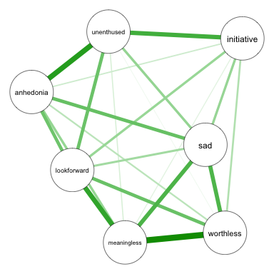
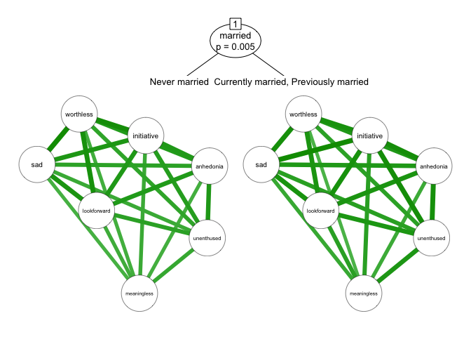

Psychometric networks provide information about the statistical relationships between observed variables. networktree is a package for partitioning psychometric networks to reveal heterogeneity.
Consider a depression network where the nodes represent different symptoms:

networktree can be used to identify if this depression network is heterogeneous depending on the sample characteristics. For instance, we can test whether the network differs depending on participants’ marital status.

We can explore multiple characteristics at once, with the more important splitting characteristics being prioritized in the tree model. Continuous partitioning variables (e.g., age) can be included, and networktree will automatically search for the ideal split point(s).

Resources:
- networktree Home Page
- Getting Started - Tutorial
-
CRAN documentation
- Example application
- Published paper for a more advanced look.
To cite networktree, use:
Jones, P.J., Mair, P., Simon, T., & Zeileis, A. (in press). Network trees: A method for recursively partitioning covariance structures. Psychometrika.